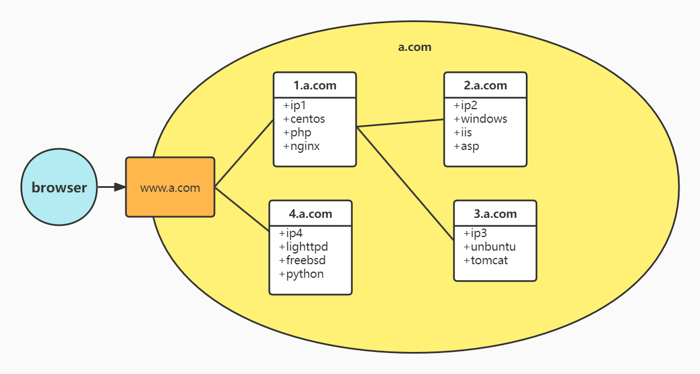
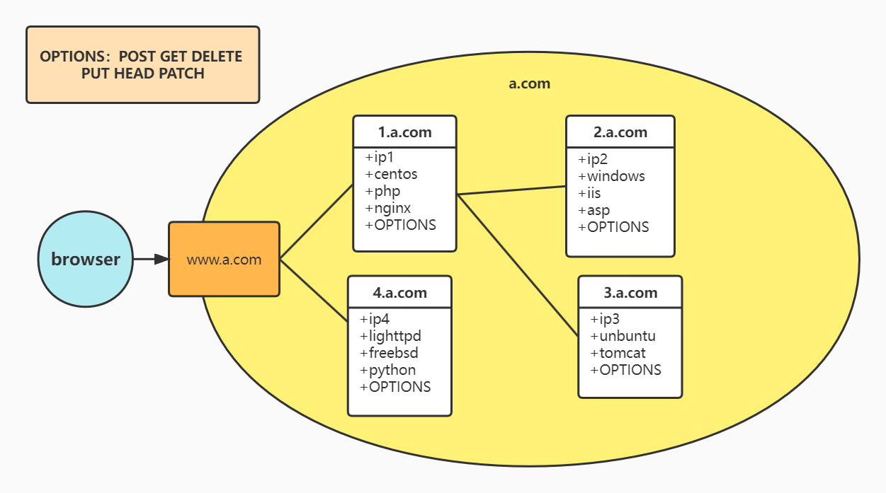

WAF功能
WAF全称叫Web Application Firewall，和传统防火墙的区别是，它是工作在应用层的防火墙，主要对web请求/响应进行防护。那么WAF有什么功能呢？
防火墙都是防御性的产品，有防就有攻，要了解WAF有什么功能，就要从攻击者的角度去思考。
攻击的目的要么是为了利益，要么是为了炫技。目前攻击者大多都是闷声发大财，很少会为了炫技而惹上麻烦。那么，攻击目标越大，越有价值。
一个攻击者的目标由大到小，往往是这样 ：
- 全网
- 网络上某一主机
- 某一主机的数据库
- 某一主机WEB系统的管理员
- 某一主机WEB系统其它用户
假设一个WEB网络大致如下，且它在WEB服务器与浏览器之间已经用传统防火墙防护起来，也就是说，对http://www.a.com 进行端口扫描之类的攻击行为已经没用了。

攻击者可以通过下面步骤来得到这个网络的信息：
- 通过OPTIONS,TRACE方法来探测里面的拓扑。如果webserver支持并允许这两个方法，通过检查响应包的Via或Max-forwards字段，可以得到各个节点的域名。

通过检查响应包的Server字段或X-Powered-By字段来确定各个节点的http服务器软件版本和脚本语言解释器版本。同时由第一步得到的域名，也可以到相应域名注册网站（如站长之家）上查找IP。而且有时候，由于网络管理员的疏忽，通向其它节点的路径并没有禁止端口扫描，那样通过端口扫描，可以得到系统信息，如操作系统类型，版本，开启了什么服务。然后在CVE上查询相应版本漏洞和exploit-db上下载相应的payload来攻击，获取主机的控制权。
如果第二步不奏效，也可以通过HTTP的OPTIONS方法来获取网站支持的方法，比如允许DELETE方法，或者PUT方法，那么攻击者可以上传一个脚本获取整个站点的源代码和数据库数据甚至获取整个站点所有主机的权限，或者把认证的脚本给删除。
如果第三步也不奏效，攻击者可能就会扫描所有网页，看是否存在文件路径遍历，文件包含注入，API注入，命令注入之类的漏洞，来获取整个站点的系统信息甚至获取webshell。
如果第四步也不奏效，继续扫描所有页面，看是否有sql注入的漏洞，看能否获取站点的数据库数据或是否可通过数据库执行系统命令，获取主机权限。
如果第五步也不奏效，只能看有没有XSS，url注入等漏洞，能否骗到其它合法用户的权限。或者看能否上传恶意文件。
再思考多一点，如果攻击者并没有打算攻陷a.com或从它偷取数据，而是频繁向a.com发送消耗大量资源的请求，比如请求会使用大量数据库查询的接口，或上传大量文件，导致正常服务无法响应。这种方式叫做CC攻击（ChallengeCollapsar）。
那么，WAF必须具备防护CC攻击能力，也就是说，WAF具备限制对某些URI请求次数的能力和限制文件上传功能的能力。
从性能角度来看，由于HTTP是应用层的协议，每次WAF都要解析它，会造成很大性能损耗。而对于某些经常发恶意请求的IP或进行CC攻击的IP，如果能够在网络层就把它们拦截了，对WAF性能是有很大的提升。所以WAF还必须具备IP黑名单的能力。
关于IP黑名单，再从安全运维角度来看，如果是IP黑名单是通过手工输入，那么，当攻击者使用IP池攻击，可能会导致IP黑名单的防护攻击失效。那么，如果WAF是支持动态黑名单，就可以很好解决这个问题。如果是由WAF本身产生黑名单，会对WAF性能有很大影响，所以WAF需要能够对接实时计算平台，由实时计算平台产生黑名单回馈给WAF。那么WAF就必须支持与实时计算平台对接的能力。
有黑名单就有白名单，对于某些资源，如图像，影音，css，js文件，WAF对它们应用规则，只会浪费计算资源和降低服务的响应速度，所以，需要把一些资源URL放在白名单里。
总体来说，WAF功能有如下：
- 禁止HTTP协议的非安全方法
- 伪装Web服务的特征
- 防止API和命令注入
- 防止路径遍历和文件包含注入，对敏感的系统路径进行保护
- 防止sql注入
- 防止XSS攻击
- 防止网页挂马
- 防护CC攻击
- 文件上传的防护
- 动态IP黑名单
- 白名单
- 与实时计算平台对接